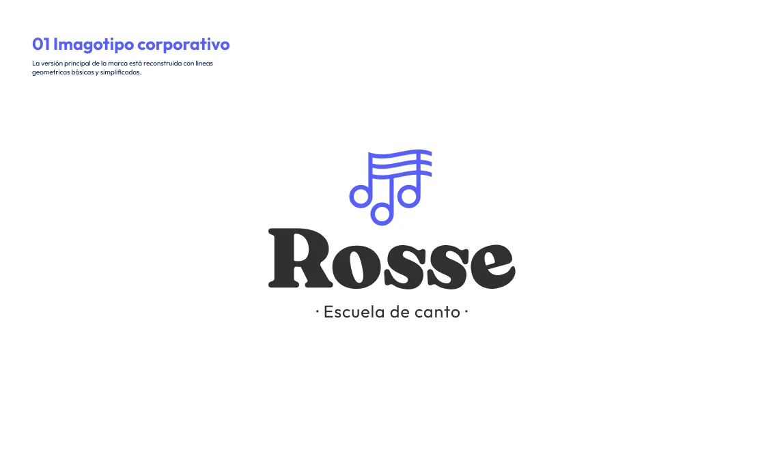
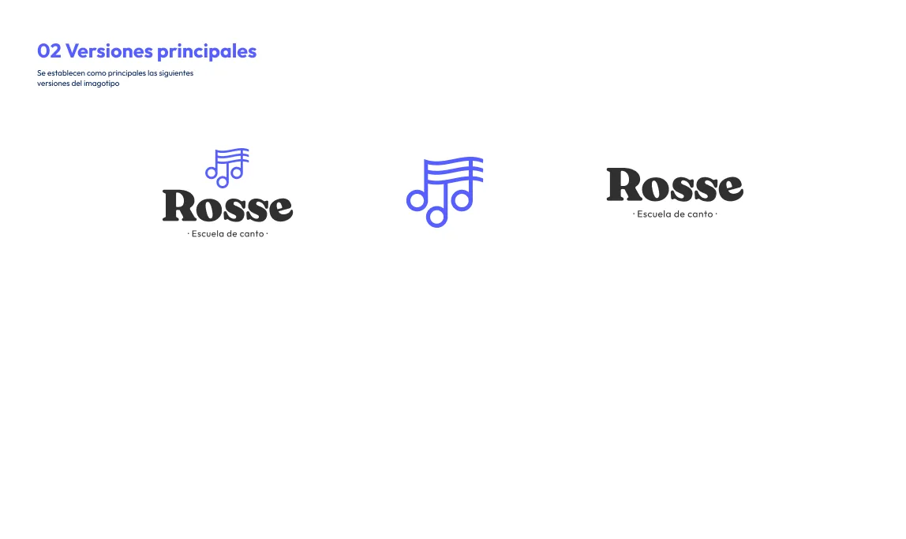
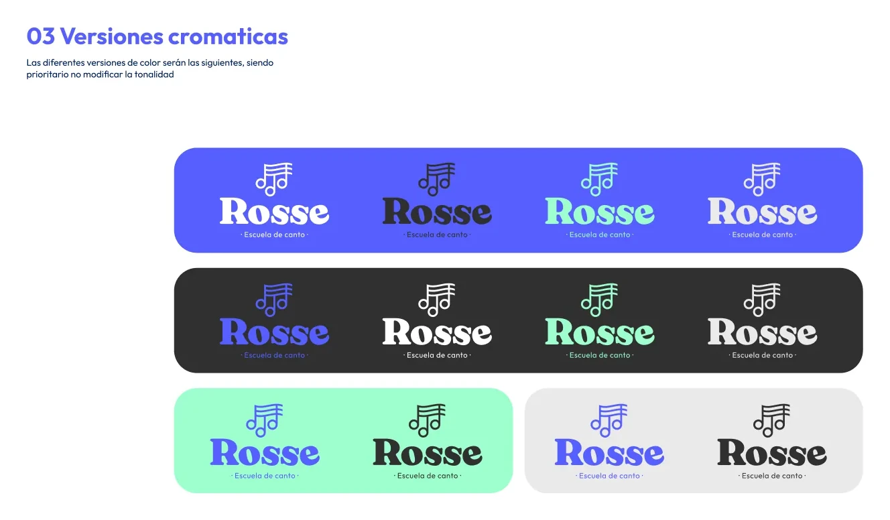
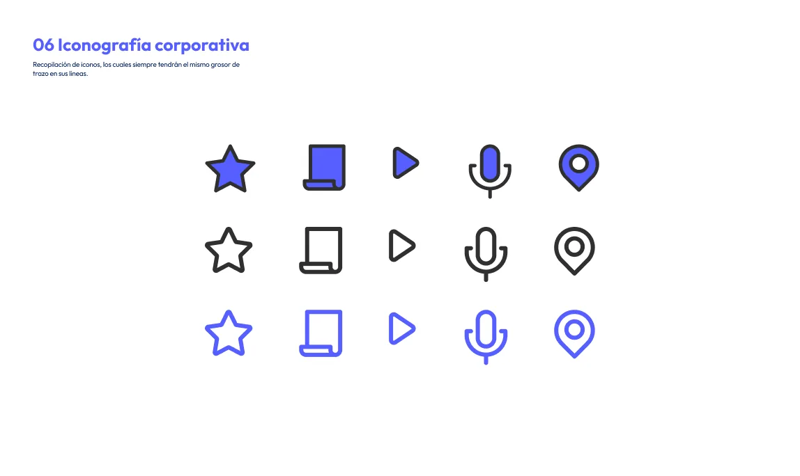
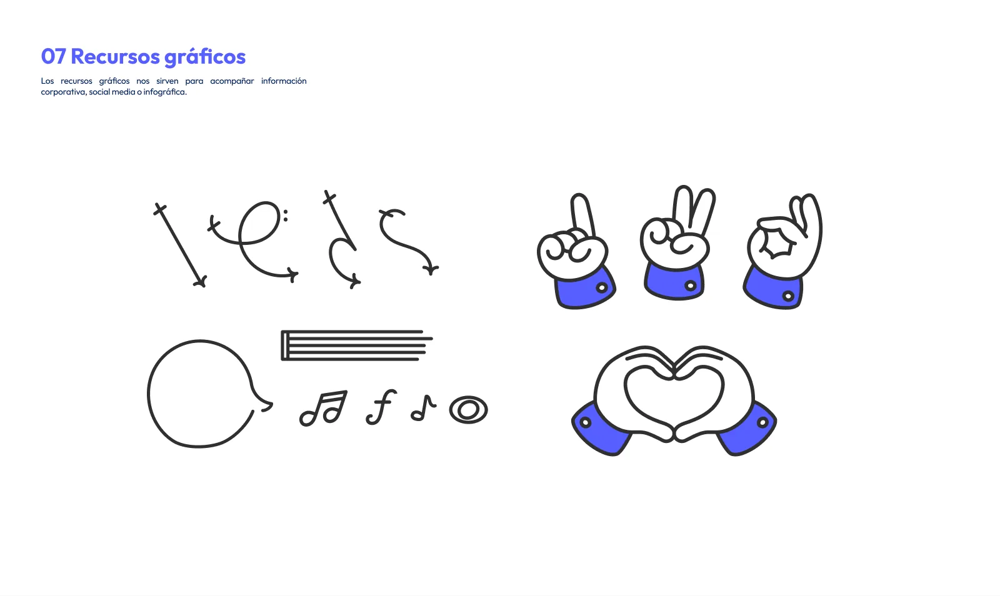
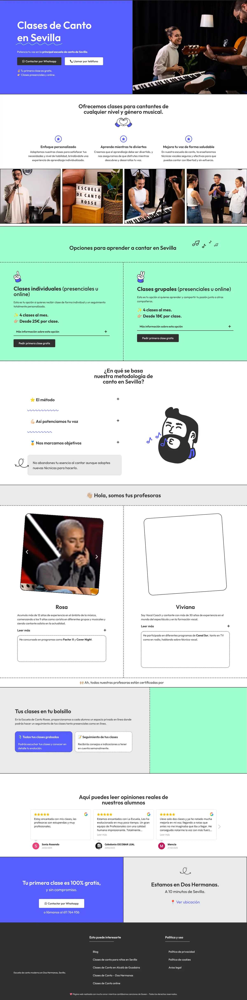
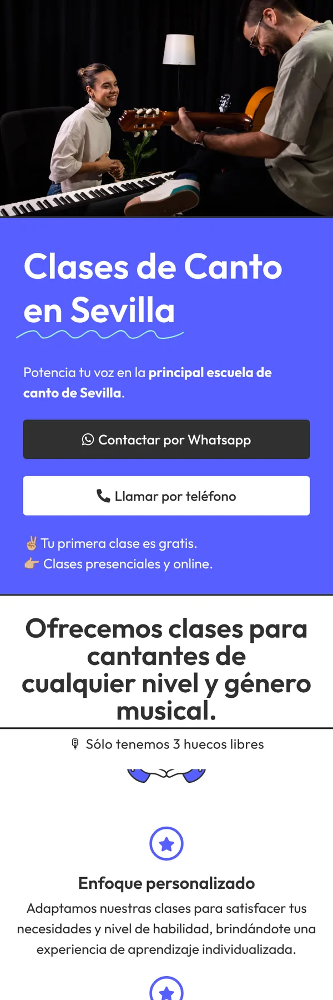

Rosse
Detalle, elegancia y frescura para la escuela de canto de Rosa.
Entrar en el casoCantar para ensanchar el alma.
02 · Rosa
Una cantante que monta su propia escuela, y pone su experiencia por delante.
Rosa decidió abrir Rosse para enseñar como a ella le habría gustado aprender. La marca tenía que transmitir su gusto por el detalle y la elegancia, sin perder lo amable y lo fresco de una clase en la que te sientes en casa.
- Detallista
- Elegante
- Amable
- Fresca
03 · Imagotipo
Las notas se apoyan en el nombre, como una voz sobre el piano.
Un grupo de corcheas corona una serif de curvas generosas. Hay versión bicolor, violeta y gris oscuro, y un isotipo sólido para imprimir a una tinta.



04 · Color
Violeta para la voz, menta para el énfasis.
Ancho proporcional al uso. Toca un color para copiar su código.
05 · Tipografía
Outfit, de la pizarra al cartel.
Una sans serif geométrica que funciona igual en el texto corrido de una ficha de curso que en un titular de redes.
Clases de canto para cualquier nivel y género.
LightRegularMediumSemiBoldExtraBold
ABCDEFGHIJKLMNÑOPQRSTUVWXYZ
abcdefghijklmnñopqrstuvwxyz · 0123456789
06 · Recursos
Iconos limpios y doodles a mano alzada.
La iconografía es sólida o bicolor, siempre con el violeta. Los doodles y las manos que forman un corazón ponen la parte amable: flechas, notas, bocadillos, la sensación de una clase.


07 · Web
Una web que te invita a la primera clase.
La marca se aplica a la web de la escuela: el violeta abre, la menta destaca las ofertas y los doodles acompañan cada sección hasta el botón de WhatsApp.


Capturas de escueladecantorosse.com, noviembre de 2026.
Rosse
Tu primera clase es gratis.
- Cliente
- Rosse · Escuela de canto
- Sector
- Educación musical
- Papel
- Imagotipo, brandbook, color, iconografía, doodles y web
- Caso
- Jose Antonio · Monochrome
¿Quieres un proyecto así para tu marca?
Cuéntame tu idea en 2 minutos y te preparo una propuesta a medida.